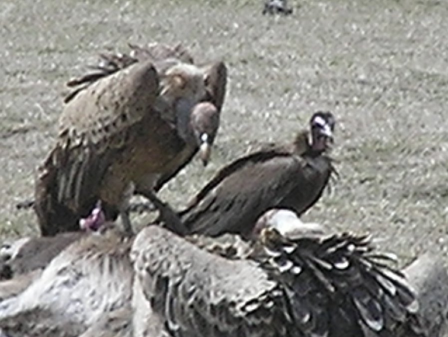
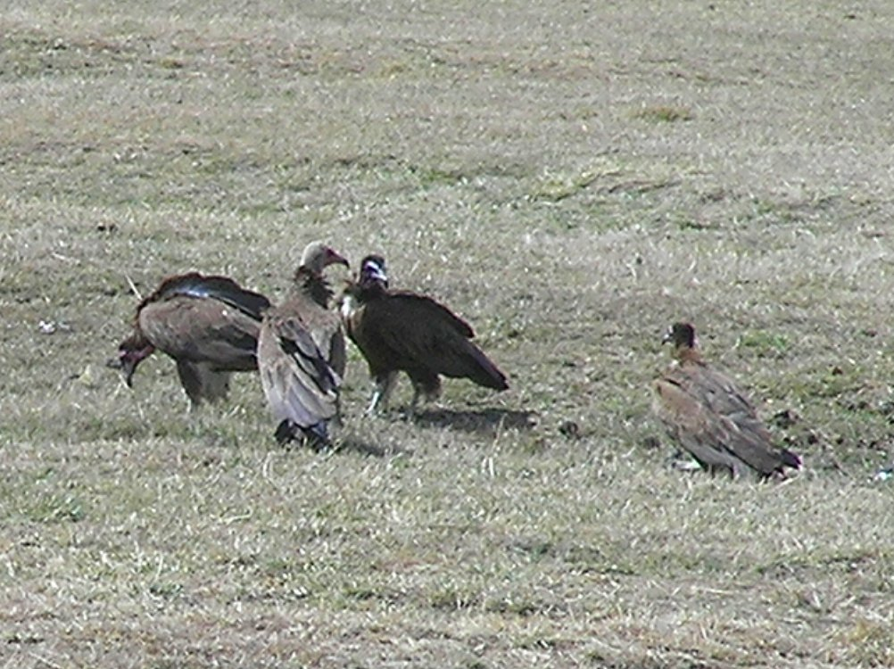
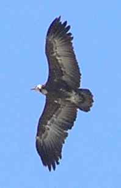
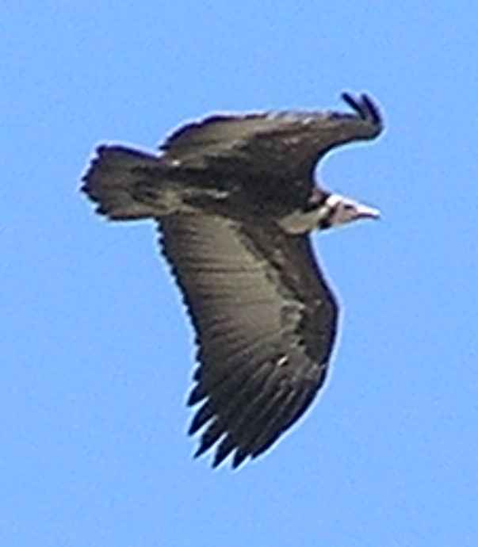

65-75cm.
|  |  |
|  |  |
In photograph 1, the Hooded Vulture is on the right, with a Ruppel's Vulture on the left.
The Hooded Vulture often comes to the college campus, particularly on feast days after animals have been slaughtered.
It is often to be seen soaring in thermal air currents along with the much larger Ruppel's Vulture. In flight the Hooded Vulture can be recognised by the dark band on the forward part of the wings.